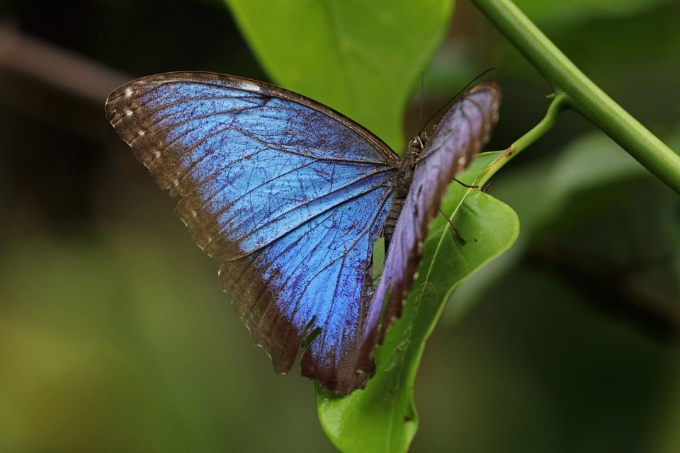
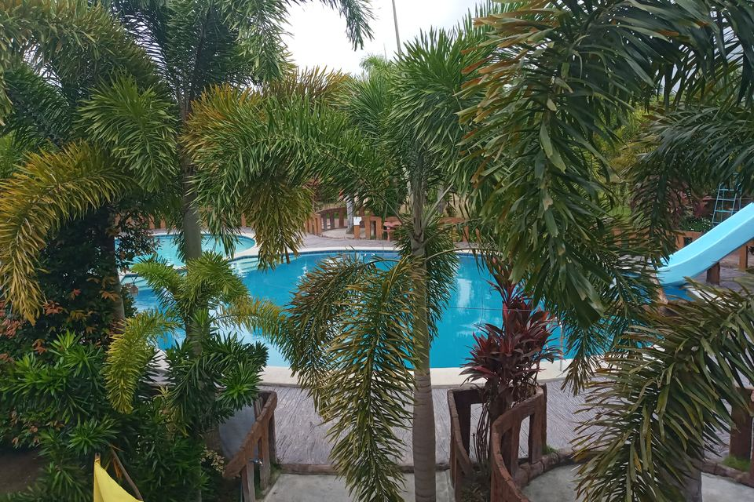
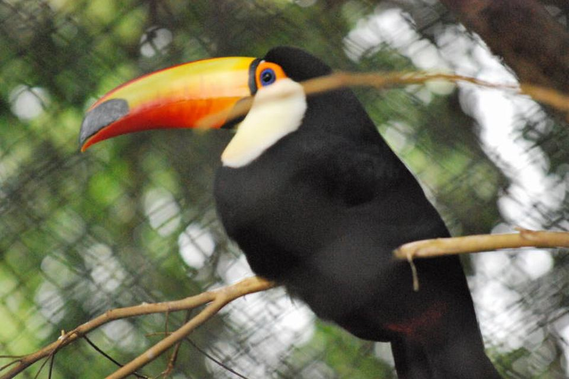
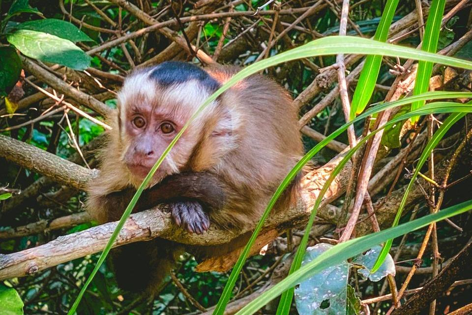
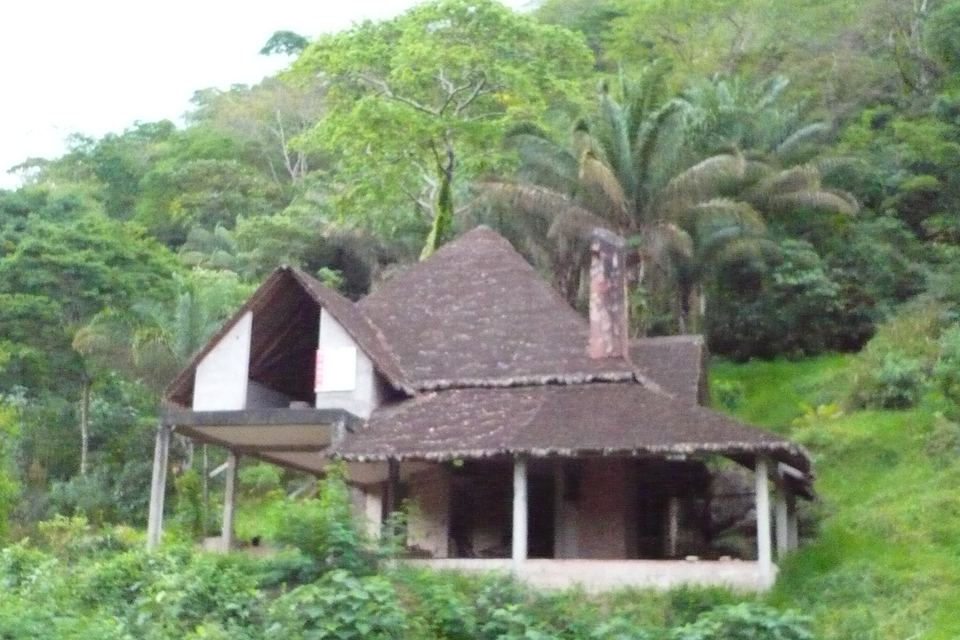
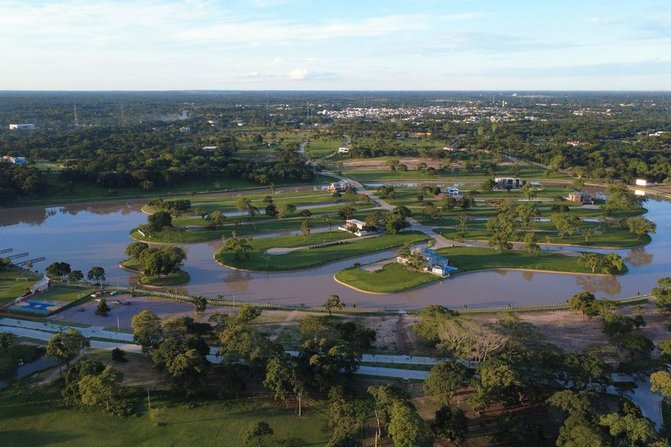

Galería
Una muestra de los lugares que vas a recorrer con nosotros. Las fotos son de referencia; pronto las reemplazaremos por fotos de nuestros viajeros.
Mariposario y orquideario

Full Day Güembé

Aviario de aves exóticas

Isla de los Monos

Noche en cabaña

Kayak al atardecer
